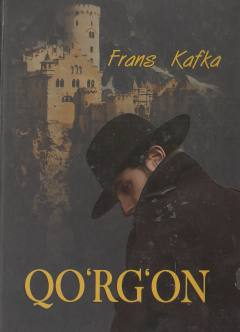

QSirli qo'rg'onga yetib kelgan tanobchi K.ning murakkab va jumboqli sarguzashtlari.
Frans Kafkaning ushbu romanida tanobchi K.ning sirli qo'rg'on xodimlari bilan bog'liq tushunarsiz va murakkab sarguzashtlari hikoya qilinadi. Asar XX asr Yevropa adabiyotining eng mashhur modernistik namunalaridan biri hisoblanadi. Kitob o'quvchilarni insonning yolg'izligi va noma'lum kuchlar qarshisidagi ojizligi haqida mushohada yuritishga undaydi.